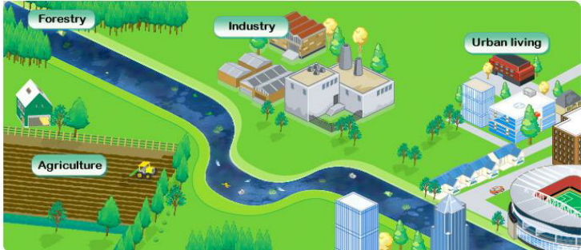
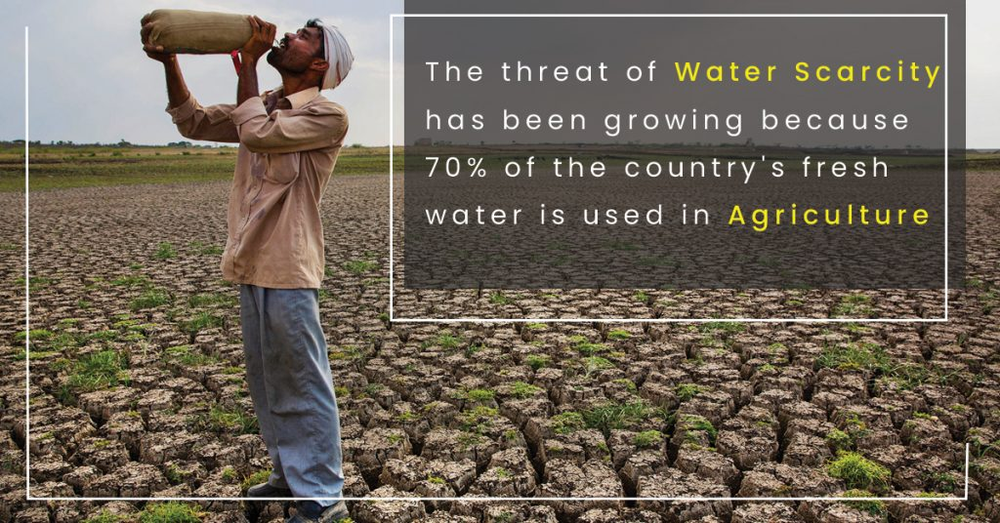

1. Water Scarcity
Water scarcity is a critical global challenge impacting various regions and communities worldwide. With a
rising global population, increasing industrial demands, and the compounding effects of climate change,
many areas face dwindling water resources. Uneven distribution, inefficient usage, and pollution
exacerbate this scarcity, leading to severe social, economic, and environmental repercussions.
Agriculture, a major water consumer, faces challenges, impacting food production and livelihoods. Access
to safe drinking water diminishes for many, resulting in health concerns and economic setbacks.
Droughts, erratic rainfall, and environmental degradation further strain water supplies, intensifying
the crisis.
Access
to safe drinking water diminishes for many, resulting in health concerns and economic setbacks.
Droughts, erratic rainfall, and environmental degradation further strain water supplies, intensifying
the crisis.
Addressing global water scarcity requires collaborative, innovative, and sustainable solutions. Efficient water management, conservation practices, investment in infrastructure, and international cooperation are vital in ensuring access to this vital resource, fostering resilience against the challenges posed by water scarcity on a global scale.
2. Unequal Access to Clean Water
Unequal access to clean water remains a stark reality, affecting millions worldwide. While some communities have reliable access to safe and clean water, many others, especially in developing nations and marginalized areas, face significant challenges in securing this fundamental resource. Insufficient infrastructure, economic disparities, and geographic limitations contribute to this unequal access. Women and children often bear the primary responsibility for collecting water, which not only impacts their education and well-being but perpetuates the cycle of inequality.

Inadequate access to clean water leads to severe health risks, as communities resort to using contaminated sources, resulting in waterborne diseases and an increased burden on healthcare systems. Addressing this inequity demands not only infrastructural improvements but also policy initiatives and community engagement to ensure that everyone, irrespective of their location or economic status, has access to safe and clean water, empowering them to lead healthier and more prosperous lives.
3. Deteriorating Water Quality
Deteriorating water quality is a pervasive global concern impacting ecosystems, public health, and economic stability. Pollution from various sources, including industrial effluents, agricultural runoff, and inadequate waste disposal, contributes to the contamination of water bodies. This pollution not only affects surface water but also seeps into groundwater sources, often used for drinking and irrigation. Chemical pollutants, heavy metals, and pathogens present in the water pose significant health risks, leading to waterborne diseases and long-term health implications. Aquatic ecosystems suffer, disrupting biodiversity and ecological balance, further impacting fishing and agriculture.
Addressing deteriorating water quality requires a concerted effort involving stringent environmental regulations, investment in wastewater treatment plants, sustainable agricultural practices, and public awareness campaigns. Collaborative action, innovative technology, and responsible waste management are crucial in safeguarding and restoring water quality, ensuring a healthier environment and sustainable access to clean water for present and future generations.
4. Impact on Agriculture
The impact of water scarcity on agriculture is substantial, influencing food production, rural economies,
and global food security. Agriculture heavily relies on water for irrigation, and inadequate water
availability significantly affects crop yield and quality. Farmers often face challenges in securing
enough water for their fields, leading to reduced agricultural output, crop failures, and economic
hardships.

In regions facing water scarcity, farmers often resort to unsustainable measures like over-extraction of groundwater, exacerbating the depletion of aquifers. This overexploitation leads to long-term consequences, including land subsidence and the deterioration of soil quality.
The impact of water scarcity on agriculture is not isolated—it ripples through the food supply chain, affecting prices, food availability, and food security. Addressing these challenges necessitates the adoption of water-efficient agricultural practices, investment in water-saving technologies, improved water resource management, and the promotion of drought-resistant crop varieties. Sustainable agricultural policies, community engagement, and innovative water conservation techniques are essential to mitigate the adverse effects of water scarcity on agriculture and ensure stable food production.
5. Climate Change Effects
Climate change significantly impacts water availability, quality, and distribution, posing substantial challenges globally. Changing weather patterns, increased temperatures, and altered precipitation trends are key contributors to water-related issues.
Erratic Rainfall and Droughts: Climate change leads to unpredictable rainfall patterns, causing both heavy precipitation events and extended dry spells. Droughts become more frequent and severe in many regions, diminishing water availability for agriculture, communities, and ecosystems.
- Melting Glaciers and Reduced Snowpack: Melting glaciers and reduced snowpack affect the availability of freshwater in river systems. This impacts not only local water resources but also the long-term supply of water for regions relying on glacier-fed rivers.
- Sea-Level Rise and Saltwater Intrusion: Rising sea levels lead to saltwater intrusion in coastal aquifers, contaminating freshwater sources and threatening agricultural lands and drinking water supplies.
Extreme Weather Events: More frequent and intense storms, hurricanes, and floods have the potential to overwhelm infrastructure and cause contamination of water sources, leading to waterborne diseases and damage to water treatment facilities.
- Impact on Ecosystems: Climate change affects the health and distribution of ecosystems. Changes in water availability impact aquatic habitats, disrupting ecosystems and endangering species dependent on specific water conditions.
Addressing the impacts of climate change on water resources necessitates a comprehensive approach. Mitigation strategies to reduce carbon emissions, adaptation measures to manage the effects of climate change, investment in resilient infrastructure, and the promotion of sustainable water management practices are vital. Collaboration on an international scale and community engagement are essential for developing and implementing solutions to mitigate the effects of climate change on water resources.
6. Conflict Over Water Resources
Water disputes between nations, regions, and communities are increasingly common, often arising due to the shared use of rivers, lakes, or aquifers. These conflicts revolve around water allocation, usage rights, and infrastructure development.
Causes of Water Conflicts
- Unequal distribution and access to water
- Competing demands from agriculture, industry, and municipalities
- Deteriorating water quality
- Climate change effects leading to water scarcity
- Political and economic tensions between regions or nations
Notable Examples
- The Nile River Basin: Disputes among countries sharing the Nile's waters, such as Ethiopia,Sudan, and Egypt
- Indus Water Treaty: Conflicts and agreements between India and Pakistan over the use of the Indus River's waters
- Mekong River: Conflicts between countries like China, Laos, Thailand, Cambodia, and Vietnam over hydropower development
Several factors contribute to conflicts over water resources:
Several regions globally have experienced significant water disputes:
Resolving conflicts over shared water resources demands diplomacy, cooperative agreements, and international treaties that consider the needs of all stakeholders involved.